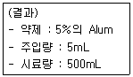
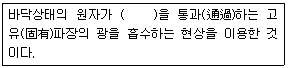

수질환경산업기사 (2002-03-10 기출문제)
1과목: 수질오염개론
1. 다음 중 수온약층(thermocline)에 관한 설명중 알맞은 것은?
- 호수에서 수온이 깊이에 따라 급격히 감소하는 중간 부분이다.
- 호수에서 바람에 따라 혼합이 일어나는 표층 순환대이다.
- 호수에서 수온이 낮은 바닥부근의 정체대이다.
- 호수에 조류가 대량번식하여 투명도가 지극히 감소되는 수층이다.
(정답률: 알수없음)

2. 하천이나 호수의 바닥 또는 변두리의 자갈, 모래층 중에 함유되어 있는 물로서 철분, 망간등의 함유도가 적고 수량이 비교적 안정적이고 확실한 지하수 수원은?
- 심층수
- 천층수
- 용천수
- 복류수
(정답률: 알수없음)
3. 다음은 지하수의 수질특성에 대한 설명이다. 이중 잘못된 것은?
- 수온변동이 적고, 탁도가 낮다.
- 유속이 느리고 국지적인 환경조건의 영향이 적다.
- 알칼리도 및 경도가 지표수보다 높다.
- 세균에 의한 유기물 분해가 주된 생물작용이다.
(정답률: 알수없음)
4. 연속류 교반 반응조(CFSTR)에 관한 내용중 알맞지 않은 것은?
- 동일 용량 PFR에 비해 제거효율이 좋다
- 유입된 액체의 일부분은 즉시 유출된다
- 충격부하에 강하다
- 부하변동에 강하다
(정답률: 알수없음)
5. 유해물질과 중독증상과의 연결이 잘못 된 것은?
- 카드뮴 - 골연화증, 고혈압, 위장장애 유발
- 구리 - 과다 섭취시 구토와 복통, 만성중독시 간경변 유발
- 납 - 다발성 신경염, 신경장애 유발
- 크롬 - 피부점막,호흡기로 흡입되어 전신마비,피부염유발
(정답률: 54%)
6. 화력발전소에서 배출되는 온열배수로 인한 수역에서 발생되는 영향이 아닌 것은?
- 물의 용존산소의 농도를 줄인다.
- 수중 미생물이나 물고기의 번식율을 감소시킨다.
- 수중 생물의 독성물질에 대한 예민도를 증가시킨다.
- 동계의 안개발생으로 항해에 장해를 준다.
(정답률: 알수없음)
7. 다음중 탈질화 과정과 관련이 가장 적은 미생물은?
- Micrococcus
- Achromobacter
- Pseudomonas
- Crenothrix
(정답률: 알수없음)
8. 지구상 담수의 존재량을 볼 때 그 양이 가장 큰 존재 형태는?
- 하천수
- 빙하
- 호소수
- 지하수
(정답률: 알수없음)
9. 폐수시료 5.0ml 를 표준 BOD병에 넣고 증류수로 희석하여 300mL가 되게 하였다. 이병의 초기 BOD는 8.0 mg/L이었고 20℃에서 5일후 DO는 5.0 mg/L이었다면 폐수의 최종 BOD(BODu)값은? (단, k1 = 0.1/d로 한다.)
- 194 mg/L
- 212 mg/L
- 228 mg/L
- 263 mg/L
(정답률: 알수없음)
10. 하천의 생태변화에 관한 설명으로 알맞지 않은 것은?(단, Whipple의 4지대 기준)
- 여름철 용존산소 포화치의 45%에 해당하는 D.O 를 가지는 지점이 분해지대이다.
- 탄산가스나 암모니아성 질소 농도가 증가하는 지점이 활발한 분해지대이다.
- 용존산소가 포화될 정도로 증가하고 아질산염이나 질산염의 농도가 증가하는 지점은 회복지대이다
- 곰팡이류가 심하게 번식하는 지점은 활발한 분해지대이다.
(정답률: 64%)
11. 수온이 20℃인 어느 강에 대기중에서 0.08mgO2/L/hr의 용존산소가 공급되어 강의 상시 용존산소 농도가 7mg/L로 유지된다면 이 강의 산소전달계수(hr-1)는 ? (단, α β 값은 1.0, 포화용존산소 농도 9.0 mg/L이다.)
- 0.06
- 0.⑤
- 0.04
- 0.03
(정답률: 알수없음)
12. 분뇨의 특성으로서 틀린 항목은?
- 다량의 유기물과 대장균을 포함하고 있다.
- 혐기성 소화처리하면 메탄가스가 발생된다.
- 분과 뇨의 구성비는 약 1:8∼10 정도이다.
- 악취의 원인은 NH3,CH4,H2S 이다.
(정답률: 60%)
13. 1000m3인 탱크에 염소이온 농도가 100mg/L이다. 탱크내에 물은 완전혼합이고, 계속적으로 염소이온이 없는 물이 480m3/day로 유입된다면 탱크내 염소이온농도가 1.0mg/L로 낮아질 때까지의 소요시간(hr)은 ? (단, Ci/Co=e-kt )
- 64
- 128
- 230
- 342
(정답률: 알수없음)
14. 다음 중 가경도(pseudo hardness) 유발 물질로 가장 대표적인 것은?
- 칼륨
- 염소
- 나트륨
- 철
(정답률: 알수없음)
15. 염소 소독시 발생될 수 있는 다음의 물질 중 살균력이 가장 큰 것은?
- NaOCl
- OCl-
- HOCl
- 클로라민
(정답률: 80%)
16. 0.04M-HCl이 1%해리되어 있다면 수용액의 pH는?
- 2.4
- 2.8
- 3.4
- 3.8
(정답률: 50%)
17. 다음 중 응집의 반응기작과 거리가 먼 것은?
- 가교작용
- 이중층의 압축
- 분산혼합작용
- 체거름
(정답률: 알수없음)
18. 친수성콜로이드의 특성에 해당되는 것은?
- 분산매의 점성도와 비슷하다.
- 에멀젼상태이다.
- 틴달효과가 현저하다.
- 동결후 재구성이 용이하지 않다.
(정답률: 50%)
19. Ca2+가 20㎎/L, Mg2+가 24㎎/L이 포함된 물의 경도는? (단, Ca의 원자량 40, Mg의 원자량 24)
- 50mg/L as CaCO3
- 100mg/L as CaCO3
- 150mg/L as CaCO3
- 200mg/L as CaCO3
(정답률: 67%)
20. HCHO(Formaldehyde) 500mg/L의 이론적 COD 값은?
- 435mg/L
- 533mg/L
- 718mg/L
- 1067mg/L
(정답률: 알수없음)
2과목: 수질오염방지기술
21. 진공여과기로 슬러지를 탈수하여 cake 함수율을 78%로, 여과면적은 60m2, 여과속도는 25kg/m2 hr이라면 이 기계의 시간당 cake의 생산량은? (단, 슬러지 비중은 1.0로 가정한다.)
- 4.81 m3/h
- 5.64 m3/h
- 6.82 m3/h
- 7.73 m3/h
(정답률: 40%)
22. 활성슬러지 공법으로 100m3/일의 폐수를 처리한다. 포기조 용적이 20m3, 포기조내 MLSS가 2000mg/L로 유지된다. 처리수로 유실되는 SS농도는 평균 20mg/L, 폐기시키는 슬러지의 양은 1m3/day이며 폐기되는 슬러지의 SS농도는 1%이라면 미생물 체류시간은?
- 약 1.8일
- 약 2.5일
- 약 3.3일
- 약 4.5일
(정답률: 알수없음)
23. 3차처리 프로세스 중 5단계-Bardenpho프로세스에 대한 설명으로 틀린 것은?
- 포기조에서는 질산화로 질소가 제거된다.
- 혐기조에서는 용해성 인의 방출이 일어난다.
- 인의 제거는 인의 함량이 높은 잉여슬러지를 제거함으로 가능하다.
- 무산소조에서는 탈질소화과정이 일어난다.
(정답률: 알수없음)
24. 유입하수량이 10,000m3/day, 유입 BOD가 200mg/L,폭기조용량 500m3, 폭기조내 MLSS가 2500mg/L, MLVSS가 MLSS의 70%, BOD 제거율이 90%이고 BOD의 세포합성율이 0.55이며 슬러지의 자기 산화율이 0.08/day 일 때 잉여슬러지 발생량은?
- 630 kg/day
- 780 kg/day
- 840 kg/day
- 920 kg/day
(정답률: 알수없음)
25. 급속모래여과조의 직면하게 되는 운영관리상 주요 문제점이 아닌 것은?
- 여과상의 수축
- 여과상의 팽창
- 공기결합(air binding)
- 진흙매트(muddy mat)형성
(정답률: 알수없음)
26. 폐수중에 크롬을 제거하기 위해 무기환원제를 사용하여 환원처리하는 방법이 있다. 일반적으로 이 방법에서 사용하는 환원제와 가장 거리가 먼 것은?
- 중크롬산칼륨
- 철분
- 티오황산나트륨
- 아황산가스
(정답률: 40%)
27. 고형물 농도 30,000mg/L, 폐수량 500m3/d인 알콜 증류폐수가 소화조로 유입되고 있다. 이 폐수의 수분은 97%, 유기 물량은 고형 물량의 80%이며 소화조는 고형물 부하를 3.5kg/m3-d로 하여 운전되고 있다. 소화 후 유입폐수에 대한 유출폐수의 유기물 감소율이 85%를 나타냈을 때, 가스 발생률이 0.55m3/kg-제거유기물이라고 한다면 가스 발생량은?
- 4286m3/d
- 3303m3/d
- 5049m3/d
- 5610m3/d
(정답률: 알수없음)
28. Jar Test를 한 결과는 다음과 같다. Alum의 최적 주입율은 얼마인가?

- 400㎎/L
- 500㎎/L
- 600㎎/L
- 700㎎/L
(정답률: 알수없음)
29. 원칙적으로 분류식 생활하수관거로 유입되지 않는 것은?
- 가정하수
- 산업폐수
- 우수
- 침투수
(정답률: 알수없음)
30. 산화 환원조에서 반응의 정도를 측정할 수 있는 설비로 가장 적절한 것은?
- PH meter
- DO meter
- COD meter
- ORP meter
(정답률: 알수없음)
31. 용존공기를 이용한 부상조 설계를 위해 고려하여야 하는 사항과 가장 거리가 먼 것은?
- 공기용해도
- 유입공기속도
- 압력탱크의 고형물농도
- 공기/고형물의 비
(정답률: 46%)
32. BOD가 250mg/L인 하수를 1차 및 2차 처리로 BOD 30mg/L으로 유지하고자 한다. 2차 처리효율이 75%로 하면 1차 처리 효율은?
- 33%
- 45%
- 52%
- 60%
(정답률: 42%)
33. 소화조의 작동이 정상인지 아닌지 알 수 있는 방법중 가장 거리가 먼 것은?
- 주입 슬러지량에 대한 gas의 1일 발생량
- 슬러지 가스내의 CO2 가스의 함유율
- 소화중인 슬러지의 휘발성 산 함유도
- 소화조내의 혼합도
(정답률: 알수없음)
34. 자기조립법(UASB, AUSB, USB)의 특성으로 알맞지 않는 것은?
- 저농도 유기폐수처리에 적당하며 질소,인 제거가 가능하다.
- 균체를 고농도의 펠렛 모양으로 유지할 수 있다.
- 펠렛이 크게 활성화 된다.
- 고부하 운전이 가능하다.
(정답률: 알수없음)
35. 슬러지의 함수율이 95%에서 85%로 줄어들면 전체 슬러지의 부피는?
- 1/9 감소한다.
- 1/6 감소한다.
- 1/5 감소한다.
- 1/3 감소한다.
(정답률: 64%)
36. 급속모래 여과장치에 있어서 수두손실에 영향을 미치지 않는 인자는?
- 여층의 두께
- 여과 속도
- 물의 점도
- 여과 면적
(정답률: 알수없음)
37. 활성오니방법으로 처리하는 하수처리장의 유입수의 성상이 BOD 2800ppm, SS 480ppm, 인산 50ppm 이고 질소가 10ppm 일 때 질소가 부족하여 요소[(NH2)2CO]를 첨가하려 한다. 얼마나 더 첨가하는 것이 최적인가? (단, BOD:N:P=100:5:1 의 조건이 최적이라 가정함 )
- 약 140 mg/L
- 약 190 mg/L
- 약 230 mg/L
- 약 280 mg/L
(정답률: 10%)
38. 생물학적 폐수처리장의 2차 침전지에서 일어나는 현상으로 탈질소화(denitrification)와 관계 있는 것은?
- rising sludge
- 슬러지 팽화
- 생물막 탈리
- 용존산소 과포화
(정답률: 알수없음)
39. 표준 활성오니법으로 처리하는 폐수처리장에서 SV= 30% MLSS는 3000ppm 일 때 SVI 값은?
- 10
- 100
- 120
- 150
(정답률: 알수없음)
40. 생물학적 원리를 이용하여 하수내 질소를 제거하는 공법과 가장 거리가 먼 것은?
- UCT
- SBR
- Bardenpho
- A/O
(정답률: 70%)
3과목: 수질오염공정시험방법
41. 폐수의 용존산소 측정시 아지드화 변법을 사용하는 이유로 가장 타당한 것은?
- 폐수중의 유기물의 방해를 제거하기 위하여
- 폐수중의 Fe3+의 방해를 제거하기 위하여
- 폐수중의 Cl-의 방해를 제거하기 위하여
- 폐수중의 NO2-의 방해를 제거하기 위하여
(정답률: 37%)
42. CODMn를 측정하기 위하여 사용되는 유리기구와 기기를 조합한 것 중 옳은 것은?
- 300mL 환저플라스크부 환류장치 - 항온수욕조
- 300mL 킬달플라스크부 환류장치 - 수욕조
- 500mL 클라이젠 플라스크부 환류장치 - 항온수욕조
- 500mL 속실렛 환류장치 - 수욕조
(정답률: 알수없음)
43. BOD 실험을 위해 원수를 50배 희석하고 이중 150mL를 300mL BOD 병에 취한후 BOD5를 알아보았더니 DO의 양이 4mL이었다. 최초의 DO는 7mg/L였고 식종이 없었다면 BOD는 얼마인가?
- 150 mg/L
- 300 mg/L
- 1,500 mg/L
- 2,000 mg/L
(정답률: 알수없음)
44. 다음에 표시된 농도중 가장 묽은 것은 ? (단, 용액의 비중은 모두 1이다.)
- 180ppb
- 18μ g/mL
- 18mg/L
- 1.8 ppm
(정답률: 46%)
45. 흡광광도법에 의한 수질용 분석기의 파장 범위로 가장 알맞는 것은?
- 0 - 200 ㎚
- 50 - 300 ㎚
- 100 - 500 ㎚
- 200 - 900 ㎚
(정답률: 알수없음)
46. 수질오염 공정시험방법상, 흡광광도법과 원자흡광광도법 두가지 시험법을 병행할 수 없는 물질은?
- 크롬화합물
- 카드뮴화합물
- 납 화합물
- 불소 화합물
(정답률: 알수없음)
47. 다음 중 유도결합 플라스마 발광광도법에 대한 설명 중 잘못된 것은?
- 운반가스는 알곤을 사용한다.
- 시료는 가장 안쪽의 관을 통하여 플라스마의 중심부에 도입된다.
- 냉각가스는 알곤을 사용한다.
- 플라스마의 최고온도는 5000K 까지 이른다.
(정답률: 알수없음)
48. 수질오염 공정시험법에서 수질중의 인산염인을 측정할 수 있는 시험방법은?
- 아스코르빈산환원법
- 에브럴 - 노리스법
- 부루신법
- 카드뮴 아말감환원법
(정답률: 82%)
49. 실험방법(총칙)에 관한 내용으로 알맞지 않는 것은?
- '정확히 취하여'라 함은 규정한 양의 검체 또는 시액을 홀피펫으로 눈금까지 취하는 것을 말한다.
- '정확히 단다'라 함은 규정된 양의 검체를 취하여 분석용 저울로 0.1mg까지 다는 것을 말한다.
- 정량범위는 측정기기의 성능과 상관없이 일정하여야 한다.
- 표준편차율은 표준편차를 평균치로 나눈값의 백분율로서 반복조작시의 편차를 상대적으로 표시한 것이다
(정답률: 알수없음)
50. 디페닐 카바지드법에 의한 크롬의 정량 조작과 그 목적을 가장 옳게 묶은 것은 ? (순서대로 정량조작 - 목 적)
- 에틸알코올의 첨가 - 발색의 안정화
- KMnO4의 첨가와 끊임 - 크롬이온을 6가크롬으로 산화
- 아질산나트륨의 첨가 - 방해금속의 제거
- 요소의 첨가 - pH 조절
(정답률: 알수없음)
51. 원자흡광광도법의 원리를 설명한 것이다. ( )속에 들어갈 적당한 내용은?

- 금속원자층
- 원자증기층
- 분자증기층
- 연소불꽃층
(정답률: 60%)
52. 시료를 전처리할때 증류하여 그 유액으로 시험하지 않는 항목은?
- 페놀
- 불소
- 시안
- 비소
(정답률: 알수없음)
53. 흡광광도계의 자외부의 광원으로 주로 사용되는 것은?
- 텅스텐램프
- 열음극관
- 중수소방전관
- 중공음극램프
(정답률: 알수없음)
54. 개수로에 의한 유량측정시 평균유속은 Chezy의 유속 공식을 적용한다. 이 때 경심에 대한 설명중 옳은 것은?
- 수로 중앙지점의 수심(H)을 말한다.
- 측정지점에서의 평균단면적(A)을 말한다.
- 유수단면적(A)을 윤변(S)으로 나눈 것을 말한다.
- 홈바닥의 구배(I)를 말한다.
(정답률: 90%)
55. 배출허용기준 적합여부 판정을 위한 시료채취시 자동시료 채취기로 시료를 채취하는 방법으로 알맞는 것은 ? (단, 복수시료채취방법 기준)
- 2시간 이내에 30분이상 간격으로 2회이상 채취하여 일정량의 단일시료로 한다.
- 4시간 이내에 30분이상 간격으로 4회이상 채취하여 일정량의 단일시료로 한다.
- 6시간 이내에 30분이상 간격으로 2회이상 채취하여 일정량의 단일시료로 한다.
- 8시간 이내에 30분이상 간격으로 4회이상 채취하여 일정량의 단일시료로 한다.
(정답률: 알수없음)
56. 수질오염공정시험방법상 채수후 측정시간이 지연될 경우 시료를 보존하기 위해 C-H2SO4와 NaN3를 넣고 고정 시키는 항목은?
- DO
- COD
- 암모니아성질소
- BOD
(정답률: 알수없음)
57. 메틸렌 블루우법으로 음이온 계면 활성제를 정량분석하려고 한다. 측정에 방해를 주는 물질과 가장 거리가 먼 것은?
- 질산염
- 시안화물
- 인산염
- 티오시안산
(정답률: 알수없음)
58. 사각위어의 수두가 90㎝, 위어의 절단폭이 4m 라면 사각 위어에 의해 측정된 유량(m3/min)은 ? (단, 유량계수 1.6, Q = Kbh3/2)
- 5.46
- 6.97
- 7.24
- 8.78
(정답률: 40%)
59. 투과율법을 이용한 색도 실험에 관한 설명중 알맞지 않은 것은?
- 색도측정은 시각적으로 눈에 보이는 색상에 관계없이 단순 색도차 또는 단일 색도차를 계산한다.
- 시료중 부유물질은 제거하여야 한다.
- 백금-코발트 표준물질과 아주 다른 색상의 폐하수에는 적용 측정할 수 없다.
- 아담스-니컬슨(Adams-Nickerson) 색도공식을 근거로 한다.
(정답률: 알수없음)
60. 흡광광도법(디에틸디티오카르바민산법)을 사용하여 구리(Cu)를 정량할 때 생성되는 킬레이트 화합물의 색깔은?
- 적색
- 황갈색
- 황색
- 적자색
(정답률: 알수없음)
4과목: 수질환경관계법규
61. 기본 부과금의 지역별 부과계수로 적합한 것은?
- '청정'지역:1
- '가'지역:1
- '나'지역:1
- '특례'지역:1.5
(정답률: 알수없음)
62. 다음중 배출부과금의 감면대상이 아닌 것은?
- 사업장의 규모가 3종이하인 사업자
- 하수종말처리시설에 폐수를 유입하는 사업자
- 배출시설에서 배출하는 폐수를 최종방류구로 방류하기 전에 재이용하는 사업자
- 당해 부과금 부과기준일 현재 최근 6월이상 방류수 수질기준을 초과하여 오염물질을 배출하지 아니한 사업자
(정답률: 알수없음)
63. 다음의 초과부과금 산정기준 중 오염물질 1킬로그램당 부과액이 가장 큰 오염물질은?
- 6가크롬 화합물
- 납 및 그 화합물
- 카드뮴 및 그 화합물
- 유기인화합물
(정답률: 40%)
64. 수질환경보전법상 폐수처리업(폐수재이용업)의 기술능력 기준으로 알맞는 것은?
- 수질관리기술사 1인이상
- 수질환경기사와 대기환경기사 또는 화공기사 1인이상
- 수질환경기사 1인이상
- 수질환경산업기사 1인이상
(정답률: 40%)
65. 수질환경보전법상 용어의 정의중 잘못 기술된 것은?
- '폐수'라 함은 산업활동으로 발생되는 오염물질이 포함된 오수로 환경부령으로 정하는 것을 말한다.
- '수질오염물질'이라 함은 수질오염의 요인이 되는 물질로서 환경부령으로 정하는 것을 말한다.
- '폐수배출시설'이라 함은 수질오염물질을 배출하는 시설물· 기계· 기구 기타 물체로서 환경부령으로 정하는 것을 말한다.
- '수질오염방지시설'이라 함은 폐수배출시설로부터 배출되는 수질오염물질을 제거하거나 감소시키는 시설로서 환경부령으로 정하는 것을 말한다.
(정답률: 알수없음)
66. 배출시설을 개선하거나 방지시설을 설치· 운영하더라도 그 배출시설에서 배출되는 오염물질의 정도가 배출허용기준이하로 내려갈 가능성이 없다고 인정되는 경우에 부과되는 행정처분은?
- 이전
- 허가취소
- 폐쇄
- 조업정지
(정답률: 알수없음)
67. 다음중 수질오염물질이면서 동시에 특정수질유해물질이 아닌 것은?
- 트리클로로에틸렌
- 구리 및 그 화합물
- 시안화물
- 페놀류
(정답률: 알수없음)
68. 수질환경보전법상 폐수처리방법이 물리적 또는 화학적 처리방법인 경우에 시운전기간은?
- 가동개시일부터 15일
- 가동개시일부터 30일
- 가동개시일부터 45일
- 가동개시일부터 60일
(정답률: 알수없음)
69. 특정수질유해물질을 누출시킨 자에 대한 벌칙기준으로 적합한 것은?
- 1년이하의 징역
- 2년이하의 징역
- 3년이하의 징역
- 5년이하의 징역
(정답률: 알수없음)
70. 환경부장관이 환경친화기업의 지정의 세부적 사항을 협의하여야 하는 자는?
- 지방환경관리청장
- 행정자치부장관
- 산업자원부장관
- 중소기업진흥청장
(정답률: 알수없음)
71. '나'지역에 위치한 1일 폐수배출량이 2000m3미만인 사업장의 화학적산소요구량 배출허용기준은?
- 150㎎/L 이하
- 130㎎/L 이하
- 120㎎/L 이하
- 80㎎/L 이하
(정답률: 알수없음)
72. 종말처리시설종류별 배수설비의 설치방법 및 구조기준중 자체적으로 유량조정조를 설치하여야 하는 사업자기준으로 적절한 것은?
- 일최대폐수량이 일평균폐수량의 1.5배이상인 사업자와 순간수질과 일평균수질과의 격차가 200mg/L이상인 사업자
- 일최대폐수량이 일평균폐수량의 2배이상인 사업자와 순간수질과 일평균수질과의 격차가 100mg/L이상인 사업자
- 시간최대폐수량이 일평균폐수량의 1.5배이상인 사업자와 순간수질과 일평균수질과의 격차가 200mg/L이상인 사업자
- 시간최대폐수량이 일평균폐수량의 2배이상인 사업자와 순간수질과 일평균수질과의 격차가 100mg/L이상인 사업자
(정답률: 알수없음)
73. 수질오염방지시설을 설치하지 않아도 되는 경우가 아닌것은?
- 항상 배출허용기준이하의 오염물질이 배출되는 사업장
- 폐수를 환경부장관이 인정하는 관계전문기관에 전량 위탁처리하는 사업장
- 발생된 폐수를 전량 재이용하여 오염물질의 적정처리가 가능한 사업장
- 특정수질유해물질이 발생되지 아니하고 1일 폐수발생량이 환경부령으로 정한 기준 미만인 폐수가 배출되는 사업장
(정답률: 알수없음)
74. 조정정지처분이 국민의 생활, 대외적인 신용· 고용· 물가 등 국민경제 기타 공익에 현저한 지장을 초래할 우려가 있다고 인정되는 경우에 조업정지처분에 갈음하여 환경부장관이 부과할 수 있는 처분은?
- 과징금
- 배출부과금
- 과태료
- 부담금
(정답률: 알수없음)
75. 환경정책기본법상 적용되는 용수 및 원수에 관한 정의로 틀린 것은?
- 상수원수 3급: 전처리등을 거친 고도의 정수처리후 사용
- 상수원수 1급: 여과등에 의한 간이정수처리후 사용
- 공업용수 2급: 침전등에 의한 통상의 정수처리후 사용
- 수산용수 2급: 중부수성수역의 수산생물용
(정답률: 알수없음)
76. 배출시설 및 방지시설의 오염도 검사를 의뢰할 수 있는 기관과 거리가 먼 곳은?
- 국립환경연구원 및 그 소속기관
- 환경관리청 및 지방환경관리청
- 환경관리공단의 소속사업소
- 환경보전협회 및 그 소속기관
(정답률: 알수없음)
77. 하천의 환경기준 중 상수원수 1급의 BOD 기준은?
- 1 mg/L 이하
- 2 mg/L 이하
- 3 mg/L 이하
- 4 mg/L 이하
(정답률: 알수없음)
78. 다음중 특정수질유해물질· 중금속이 포함된 폐수를 배출하는 시설을 폐수배출시설로 적용하는 데 기준이 되는 1일 최대 폐수량은?
- 1m3
- 0.1m3
- 0.01m3
- 0.001m3
(정답률: 알수없음)
79. 배출시설 및 방지시설의 운영기록은 최종 기재한 날부터 얼마동안 보존하여야 하는가?
- 6월
- 1년
- 2년
- 3년
(정답률: 알수없음)
80. 낚시금지구역에서 낚시행위를 한 자에 대한 벌칙기준으로 적절한 것은?
- 3월이하의 징역 또는 100만원이하의 벌금
- 6월이하의 징역 또는 300만원이하의 벌금
- 1년이하의 징역 또는 500만원이하의 벌금
- 2년이하의 징역 또는 1500만원이하의 벌금
(정답률: 28%)